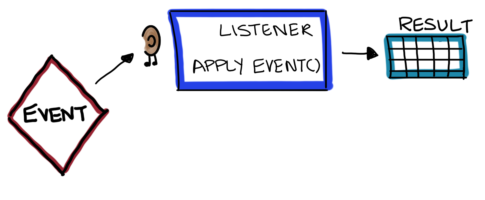
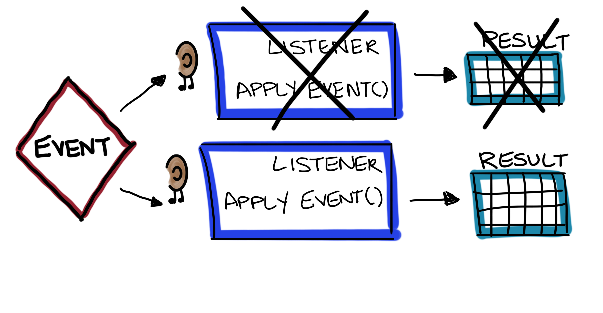
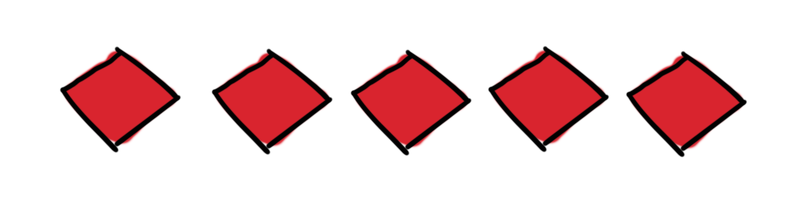
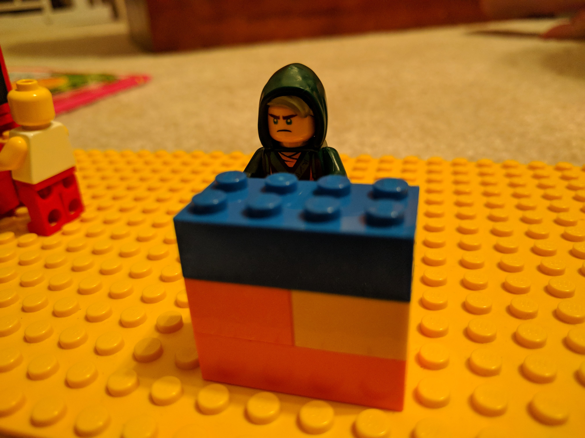

Event Sourcing a Small Library
Emily Stamey @elstamey
Emily Stamey @elstamey


<?php
namespace Library\Http\Controllers\Api\V1;
use Illuminate\Http\Request;
use Library\Book;
use Library\Http\Controllers\Controller;
class BooksController extends Controller
{
public function index()
{
return Book::all();
}
public function show($id)
{
return Book::findOrFail($id);
}
public function update(Request $request, $id)
{
$Book = Book::findOrFail($id);
$Book->update($request->all());
return $Book;
}
public function store(Request $request)
{
$Book = Book::create($request->all());
return $Book;
}
public function destroy($id)
{
$Book = Book::findOrFail($id);
$Book->delete();
return '';
}
}

Switch from CRUD to ES is tough
#NotAllApplications need to be Event-Sourced

The fundamental idea of Event Sourcing is that of ensuring every change to the state of an application is captured in an event object, and that these event objects are themselves stored in the sequence they were applied for the same lifetime as the application state itself.
Martin Fowler

What happened?
BookWasCheckedOut
What do I need to remember about it?
(book, patron, date)
Save only what you need to preserve, The rest can be looked up
(book id, patron id, date)





<?php
namespace Library\Events;
use Library\Support\Event;
class BookWasCheckedOut
{
/**
* @var DateTime
*/
public $checkoutDate;
/**
* @var int
*/
public $patronId;
/**
* @var int
*/
public $bookId;
public function __construct(DateTime $checkoutDate, PatronId $patronId, BookId $bookId)
{
$this->checkoutDate = $checkoutDate;
$this->patronId = $patronId;
$this->bookId = $bookId;
}
/**
* @return array
*/
public function serialize()
{
return [
'checkout_date' => $this->$checkoutDate->toString(),
'patron_id' => $this->patronId->toNative(),
'book_id' => $this->bookId->toNative(),
];
}
/**
* @param array $data
*
* @return static
*/
public static function deserialize($data)
{
return new BookWasCheckedOut(
DateTime::createFromFormat('j-M-Y', $data['checkout_date']),
PatronId::fromNative($data['patron_id']),
BookId::fromNative($data['book_id'])
);
}
}


<?php
namespace Library\ReadModel;
use Library\Events\BookWasCheckedIn;
use Library\Events\BookAddedToBookshelf;
use App\Support\ReadModel\Replayable;
use App\Support\ReadModel\SimpleProjector;
use Illuminate\Database\Schema\Blueprint;
use Illuminate\Database\Connection;
class BookshelfProjector extends SimpleProjector implements Replayable
{
/**
* @var Connection
*/
private $connection;
/**
* @var string table we're playing events into
*/
private $table = 'proj_bookshelf';
public function __construct(Connection $connection)
{
$this->connection = $connection;
}
public function beforeReplay()
{
$builder = $this->connection->getSchemaBuilder();
$builder->dropIfExists('proj_bookshelf');
$builder->create('proj_bookshelf_tmp', function (Blueprint $schema) {
$schema->string('book_id');
$schema->string('book_title');
$schema->string('book_author');
$schema->string('status');
$schema->string('checkout_date');
$schema->string('patron_id');
$schema->primary('book_id');
});
$this->table = 'proj_bookshelf_tmp';
}
public function afterReplay()
{
$builder = $this->connection->getSchemaBuilder();
$builder->dropIfExists('proj_bookshelf');
$builder->rename('proj_bookshelf_tmp', 'proj_bookshelf');
$this->table = 'proj_bookshelf';
}
/**
* @param BookWasCheckedOut $event
*/
public function applyBookWasCheckedOut(BookWasCheckedOut $event)
{
$bookshelfItem = BookshelfItem::where('id', $event->bookId);
$book->status = 'Checked Out';
$book->checkout_date = $event->checkoutDate;
$book->patron_id = $event->patronId;
$book->save();
}
/**
* @param BookAddedToBookshelf $event
*/
public function applyBookAddedToBookshelf(BookAddedToBookshelf $event)
{
$bookshelfItem = new BookshelfItem();
$bookshelfItem->setTable($this->table);
$bookshelfItem->bookId = $event->bookId;
$bookshelfItem->bookTitle = $event->bookTitle;
$bookshelfItem->bookAuthor = $event->bookAuthor;
$bookshelfItem->status = 'on shelf';
$bookshelfItem->save();
}
}
A set of event handlers that work together to build and maintain a table to be accessed by the read model.

<?php
namespace Library\ReadModel;
use Carbon\Carbon;
use Illuminate\Database\Eloquent\Model;
/**
* @codeCoverageIgnore
*/
class Bookshelf extends Model
{
protected $table = 'proj_bookshelf';
public $incrementing = false;
public $timestamps = false;
public static function lookupLoansFor($patronId)
{
return static::where('patron_id', $patronId)->get();
}
public function lookupAvailableBooks()
{
return static::where('status', 'on shelf')->get();
}
public function lookupOverdueBooks()
{
return static::where('checkout_date', '<', date('Y-m-d', strtotime('-7 days')))->get();
}
}
public function update(Request $request, $id)
{
// our default update method
// validate inputs
$Book = Book::findOrFail($id);
$Book->update($request->all());
return $Book;
}
public function checkOutBook(Request $request, $id)
{
// altered the update method
// validate inputs
$Book = Book::findOrFail($id);
$Book->update('status' => 'checked out',
'patron' => $request->patronId);
return $Book;
}

public function checkOutBook(Request $request, $id)
{
// altered the update method
// validate book can be checked out
$event = new BookWasCheckedOut($request->bookId,
$request->patronId,
time());
}
Command and Query Response Segregation
public function checkOut(Request $request)
{
// $request has book id, patron id
try {
$command = new CheckOutBook($request->bookId, $request->patronId);
$this->bookLendingService->handleCheckOutBook($command);
} catch (InvalidUserException $e) {
return response()->json("Not authorized to request enrollment.", Response::HTTP_FORBIDDEN);
} catch (BookUnavailableException $e) {
return response()->json("Book was not available to be checked out", 400);
return $Book;
}
<------ dynamic command handler ------>
private function handle(Command $command)
{
$method = $this->getHandleMethod($command);
if (! method_exists($this, $method)) {
return;
}
$this->$method($command);
}
private function getHandleMethod(Command $command)
{
return 'handle' . class_basename($command);
}
<-------- handle check out book command --------->
public function handleCheckoutOutBook(CheckOutBook $command)
{
$book = Book::findOrFail($command->bookId);
$patron = Patron::findOrFail($command->patronId);
if (!$book->isAvailable()) {
throw new BookUnavailableException();
}
if (!$patron->isAuthorized()) {
throw new InvalidUserException();
}
//record the event
$this->record(
new BookWasCheckedOut(date("Y-m-d H:i:s"),
$patron->getId(),
$book->getId())
);
}
A command handler receives a command and brokers a result from the appropriate aggregate. "A result" is either a successful application of the command, or an exception.
should affect one and only one aggregate
